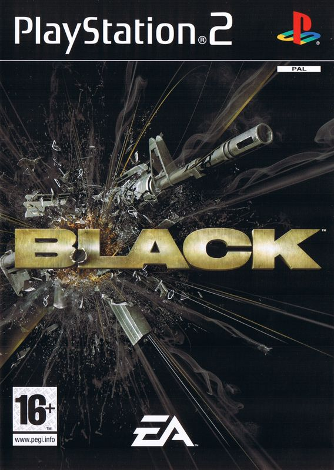

Black é um jogo de tiro em primeira pessoa, desenvolvido pela Criterion Games e publicado pela Electronic Arts para PlayStation 2 e Xbox.
A jogabilidade é essencialmente a de um jogo de tiro em primeira pessoa simples. Os jogadores só podem carregar duas armas por vez; portanto, é necessário estratégia na escolha do armamento, já que as armas diferem em suas características. O jogador também pode carregar granadas, que podem ser arremessadas sem a necessidade de trocar de arma. Minas terrestres e granadas podem ser detonadas prematuramente ao serem atingidas por tiros.
O jogo é baseado em missões, cada uma separada por uma cena de vídeo. Em níveis de dificuldade mais altos, há mais objetivos que devem ser concluídos antes que o jogador possa progredir. Esses objetivos extras envolvem coletar diversos documentos de inteligência, projetos ou destruir partes do cenário. Todos eles são indicados pela mira na interface, que muda de cor quando o jogador aponta para o objeto correspondente.
Ao concluir com sucesso os objetivos em todas as missões, em todas as dificuldades acima de "Fácil", você receberá Armas de Prata (munição infinita) e desbloqueará o M16-A2 (com lançador de granadas de 40 mm acoplado) como arma inicial padrão, também com munição infinita de 40 mm. Uma vez desbloqueadas, essas características são permanentes e não podem ser removidas sem iniciar uma nova campanha.